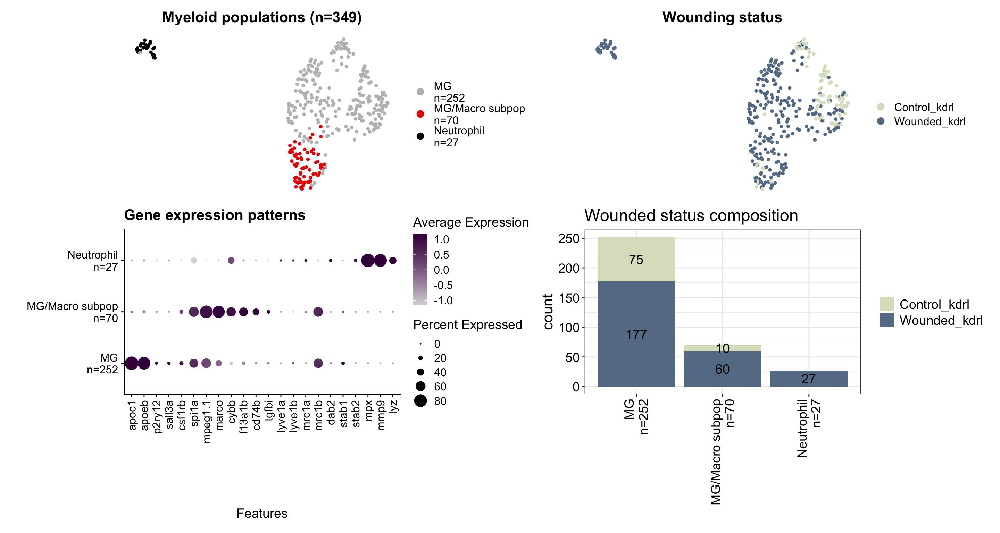
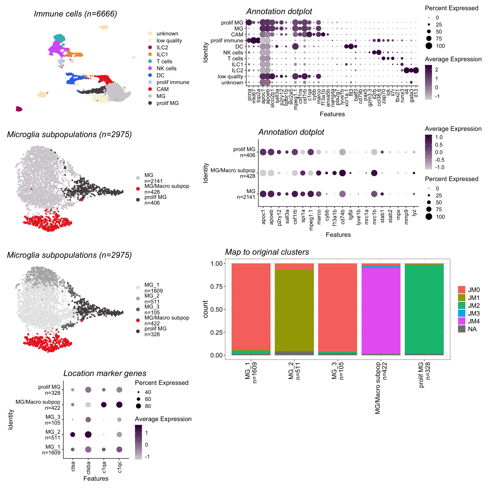

Last updated: 2026-06-01
Checks: 7 0
Knit directory:
Matters_Arising_Shimizu_etal/
This reproducible R Markdown analysis was created with workflowr (version 1.7.1). The Checks tab describes the reproducibility checks that were applied when the results were created. The Past versions tab lists the development history.
Great! Since the R Markdown file has been committed to the Git repository, you know the exact version of the code that produced these results.
Great job! The global environment was empty. Objects defined in the global environment can affect the analysis in your R Markdown file in unknown ways. For reproduciblity it’s best to always run the code in an empty environment.
The command set.seed(20260420) was run prior to running
the code in the R Markdown file. Setting a seed ensures that any results
that rely on randomness, e.g. subsampling or permutations, are
reproducible.
Great job! Recording the operating system, R version, and package versions is critical for reproducibility.
Nice! There were no cached chunks for this analysis, so you can be confident that you successfully produced the results during this run.
Great job! Using relative paths to the files within your workflowr project makes it easier to run your code on other machines.
Great! You are using Git for version control. Tracking code development and connecting the code version to the results is critical for reproducibility.
The results in this page were generated with repository version fa85658. See the Past versions tab to see a history of the changes made to the R Markdown and HTML files.
Note that you need to be careful to ensure that all relevant files for
the analysis have been committed to Git prior to generating the results
(you can use wflow_publish or
wflow_git_commit). workflowr only checks the R Markdown
file, but you know if there are other scripts or data files that it
depends on. Below is the status of the Git repository when the results
were generated:
Ignored files:
Ignored: .DS_Store
Ignored: .Rhistory
Ignored: .Rproj.user/
Ignored: output/.DS_Store
Ignored: output/data/
Ignored: renv/
Untracked files:
Untracked: output/figures/
Note that any generated files, e.g. HTML, png, CSS, etc., are not included in this status report because it is ok for generated content to have uncommitted changes.
These are the previous versions of the repository in which changes were
made to the R Markdown (analysis/MakeFigures.Rmd) and HTML
(docs/MakeFigures.html) files. If you’ve configured a
remote Git repository (see ?wflow_git_remote), click on the
hyperlinks in the table below to view the files as they were in that
past version.
| File | Version | Author | Date | Message |
|---|---|---|---|---|
| Rmd | fa85658 | Michelle Meier | 2026-06-01 | wflow_publish("analysis/MakeFigures.Rmd") |
This markdown generates individual panels for illustrator figure. This ensures we keep the same dimensions. We also tend to adjust things like text size in illustrator as its a bit easier.
suppressPackageStartupMessages({
library(here)
library(scran)
library(scater)
library(scuttle)
library(scales)
library(readr)
library(Seurat)
library(ggpubr)
library(tidyverse)
library(qs2)
library(patchwork)
library(simspec)
library(scDblFinder)
library(clustree)
})Warning: package 'scran' was built under R version 4.5.3Warning: package 'SingleCellExperiment' was built under R version 4.5.1Warning: package 'SummarizedExperiment' was built under R version 4.5.1Warning: package 'MatrixGenerics' was built under R version 4.5.1Warning: package 'GenomicRanges' was built under R version 4.5.2Warning: package 'BiocGenerics' was built under R version 4.5.1Warning: package 'S4Vectors' was built under R version 4.5.3Warning: package 'IRanges' was built under R version 4.5.1Warning: package 'Seqinfo' was built under R version 4.5.1Warning: package 'Biobase' was built under R version 4.5.1Warning: package 'scuttle' was built under R version 4.5.1Warning: package 'scDblFinder' was built under R version 4.5.2Write some core functions.
plot_umap <- function(seurat.object,
group,
title,
save.dir = output,
cols = NULL,
project.name,
size = 10){
#with legend
umap <- DimPlot(seurat.object,
group.by = group,
cols = cols,
shuffle = T,
pt.size = 1,
label = F) + NoAxes() + ggtitle(title)
umapFileName <- sprintf('%s/%s_umap_%s.pdf', save.dir, project.name, group)
ggsave(umapFileName,
umap,
device="pdf",
width=size,
height=size,
units="cm",
scale=1)
#without legend
umap.nolegend <- umap + NoLegend() + NoAxes() + ggtitle('')
umapFileName <- sprintf('%s/%s_umap_%s_nolegend.pdf', save.dir, project.name, group)
ggsave(umapFileName,
umap.nolegend,
device="pdf",
width=size,
height=size,
units="cm",
scale=1)
return(umap)
}plot_sizing <- theme_bw()+ theme(axis.title = element_text(size = 16),
axis.text = element_text(size = 14, colour = "black"),
plot.title = element_text(size = 18),
legend.text = element_text(size = 14),
legend.title = element_blank())
plot_sizing_seurat <- theme(axis.title = element_text(size = 16),
axis.text = element_text(size = 14, colour = "black"),
plot.title = element_text(size = 18),
legend.text = element_text(size = 14))
rotate_x <- theme(axis.text.x = element_text(angle = 90, vjust = 0.5, hjust=1))
strip_fix <- theme(strip.background = element_rect(fill = "white"),
strip.text = element_text(size = 14))timecourse <- qs_read(here("output/data/seurat_objects/Timecourse_40hpf_30dpf_Level_02_immuneCells.qs2"))
wounded <-qs_read(here("output/data/seurat_objects/Wounded_7dpf_Level_02_immuneCells.qs2"))
wounded$Sample_Name <- factor(wounded$Sample_Name, levels = c("Control_kdrl", "Wounded_kdrl")) #wildtype always first
silva_immune_all <- qs_read(here("output/data/seurat_objects/Silva2021_28dpf_AllImmuneCells_juvenile.qs2"))
silva_MG <- qs_read(here("output/data/seurat_objects/Silva2021_28dpf_CAM_MGonly_juvenile.qs2"))
#general output path
output <- here("output/figures/")#celltype colours
celltype_colours <- c("red2", "black", "grey")
names(celltype_colours) <- c("MG/Macro subpop", "Neutrophil", "MG")
stage.colours <- c( '#e4c6d3','#be7794', '#a95175', '#823e59', '#3f1e2c', "#190c11")
names(stage.colours) <- c('40hpf', '3dpf', '4dpf', '5dpf', '7dpf', "30dpf")
expression_colours <- c("#d9d9d9", "#40004b")
celltype_immune_colours <- rev(c("#544D51",
"#D3CFD4",
"#EB2C23",
"#c3d5f7",
"#3876E6",
"#D667F8",
"#36BDBA",
"#F19D36",
"#B5136D",
"beige",
"bisque1"))
names(celltype_immune_colours) <- levels(silva_immune_all$celltype)
wounded_colours <- c(
"#dbe2c6", #wildtype
"#657c95" #wounded
)
names(wounded_colours) <- c("Control_kdrl", "Wounded_kdrl")genes <- c("apoc1", "apoeb", "p2ry12", "sall3a", #microglia
"csf1rb", "spi1a", "mpeg1.1", "marco", #shared
"cybb", "f13a1b", "cd74b", "tgfbi", #CAM
"lyve1a","lyve1b", "mrc1a","mrc1b" , "dab2", "stab1", "stab2" , #functional genes for BAM equivalence
"mpx", "mmp9", "lyz"#neutro
)
genes_immune_annotation <- c("pcna", "mki67", "top2a", #prolif
"apoc1", "apoeb", "slco2b1", "sall3a", "p2ry12", "tgfbr1b", "slc2a5", #MG
"mpeg1.1","csf1ra", "csf1rb", #shared MG + CAM
"c1qa", "cybb", "marco", "f13a1b", "anxa5b", "nampta", "pla2g7", "tgfb1", "lyve1b", #CAM
"xcr1a.1", "flt3", "batf3", #DC
"cd79a", "cd79b", "pax5", #Bcell
"gzm3.3", "il2rb", "ccl38.6", #NK
"zap70", "lck", "il7r", #Tcell
"tbx21", "runx3", #ILC1
"il4", "gata3", "il13" #ILC2
)names(celltype_colours) <- c( "MG/Macro subpop\nn=70","Neutrophil\nn=27","MG\nn=252")
name <- "Wounded_GSE270486"#use function
p1 <- plot_umap(seurat.object = wounded,
group = "myeloid_celltype",
cols = celltype_colours,
title = "Myeloid populations (n=349)",
project.name = name)
p2 <- plot_umap(seurat.object = wounded,
group = "Sample_Name",
cols = wounded_colours,
title = "Wounding status",
project.name = name)
#dotplot
p3 <- DotPlot(wounded, features = genes, group.by = "myeloid_celltype", cols = expression_colours) + rotate_x + ylab("") + ggtitle("Gene expression patterns")
ggsave(sprintf("%s/%s_dotplot_myeloid_celltype.pdf", output, name),
p3,
device="pdf",
width=20,
height=10,
units="cm",
scale=1)
#stacked barplot
p4 <- wounded@meta.data %>%
group_by(myeloid_celltype, Sample_Name) %>%
summarise(., count =n()) %>%
ggplot(., aes(x = myeloid_celltype, y= count, fill=Sample_Name)) +
geom_bar(stat="identity", position = "stack") +
scale_fill_manual(values = wounded_colours) +
geom_text(aes(label = count),
position = position_stack(vjust=0.5),size=5, color="black")+
plot_sizing + xlab("") +rotate_x + ggtitle("Wounded status composition")`summarise()` has regrouped the output.
ℹ Summaries were computed grouped by myeloid_celltype and Sample_Name.
ℹ Output is grouped by myeloid_celltype.
ℹ Use `summarise(.groups = "drop_last")` to silence this message.
ℹ Use `summarise(.by = c(myeloid_celltype, Sample_Name))` for per-operation
grouping (`?dplyr::dplyr_by`) instead.ggsave(sprintf("%s/%s_stacked_barplot_myeloid_celltype_wounded.pdf", output, name),
p4,
device="pdf",
width=13,
height=10,
units="cm",
scale=1)
(p1+p2+plot_layout(ncol=2, axes="collect")) +p3+p4 
name <- "Timecourse_GSE270486_GSE188342"
names(celltype_colours) <- c("MG/Macro subpop\nn=941", "Neutrophil\nn=1651", "MG\nn=133")#use function
p1 <- plot_umap(seurat.object = timecourse,
group = "prelim_celltype",
cols = celltype_colours,
title = "Myeloid populations (n=2725)",
project.name = name)
p2 <- plot_umap(seurat.object = timecourse,
group = "Stage",
cols = stage.colours,
title = "Stage",
project.name = name)
p3 <- DotPlot(object = timecourse, features = genes, group.by = "prelim_celltype", cols = expression_colours)+ rotate_x + ylab("") + xlab("") + ggtitle("Gene expression patterns")
ggsave(sprintf("%s/%s_dotplot_myeloid_celltype.pdf", output, name),
p3,
device="pdf",
width=20,
height=10,
units="cm",
scale=1)
design_layout <- c("
AB
CX")
wrap_elements(p1 & theme(plot.title = element_text(size = 18, face = "italic"))) +
wrap_elements(p2 & theme(plot.title = element_text(size = 18, face = "italic")))+
wrap_elements(p3 & theme(plot.title = element_text(size = 18, face = "italic")))+
plot_layout(design = design_layout)Add N to celltype names + rename “CAMs” and microglia.
silva_MG$celltype <- case_when(silva_MG$celltype == "CAM" ~ "MG/Macro subpop\nn=428",
silva_MG$celltype == "prolif MG" ~ "prolif MG\nn=406",
silva_MG$celltype == "MG" ~ "MG\nn=2141"
)
silva_MG$celltype_subclusters <- case_when(silva_MG$celltype_subclusters == "CAM" ~ "MG/Macro subpop\nn=422",
silva_MG$celltype_subclusters == "MG_1" ~ "MG_1\nn=1609",
silva_MG$celltype_subclusters == "MG_2" ~ "MG_2\nn=511",
silva_MG$celltype_subclusters == "MG_3" ~ "MG_3\nn=105",
silva_MG$celltype_subclusters == "prolif MG" ~ "prolif MG\nn=328"
)name_all <- "Silva_All_ImmuneCells"
name_MG <- "Silva_MG"
celltype_silva_colours <- c("#544D51",
"#D3CFD4",
"#EB2C23")
names(celltype_silva_colours) <- c("prolif MG\nn=406",
"MG\nn=2141",
"MG/Macro subpop\nn=428")
colours_celltype_subclusters <- c("#EB2C23", "#544D51", "grey90", "grey70", "grey45")
names(colours_celltype_subclusters) <- c("MG/Macro subpop\nn=422", "prolif MG\nn=328",
"MG_1\nn=1609", "MG_2\nn=511", "MG_3\nn=105")p1 <- plot_umap(seurat.object = silva_immune_all,
group = "celltype",
cols = celltype_immune_colours,
title = "Immune cells (n=6666)",
project.name = name_all)
p2 <- DotPlot(object = silva_immune_all, features = genes_immune_annotation,
group.by = "celltype",
cols = expression_colours) + rotate_x + ggtitle("Annotation dotplot")Warning: The following requested variables were not found: tgfb1, cd79aggsave(sprintf("%s/%s_dotplot_allimmunecells.pdf", output, name_all),
p2,
device="pdf",
width=25,
height=10,
units="cm",
scale=1)
p3 <- plot_umap(seurat.object = silva_MG,
group = "celltype",
cols = celltype_silva_colours,
title = "Microglia subpopulations (n=2975)",
project.name = name_MG)
p4 <- DotPlot(object = silva_MG, features = genes,
group.by = "celltype",
cols = expression_colours) + rotate_x + ggtitle("Annotation dotplot")Warning: The following requested variables were not found: lyve1a, dab2Warning: Scaling data with a low number of groups may produce misleading
resultsggsave(sprintf("%s/%s_dotplot_MG_subpop.pdf", output, name_MG),
p4,
device="pdf",
width=20,
height=10,
units="cm",
scale=1)
p5 <- plot_umap(seurat.object = silva_MG,
group = "celltype_subclusters",
cols = colours_celltype_subclusters,
title = "Microglia subpopulations (n=2975)",
project.name = name_MG)
p6 <- silva_MG@meta.data %>%
group_by(., celltype_subclusters, JMclusters) %>%
summarise(., count=n()) %>%
ggplot(., aes(x=celltype_subclusters, y=count, fill=JMclusters)) +
geom_bar(stat="identity", position = "fill") +
plot_sizing + rotate_x + xlab("") + ggtitle("Map to original clusters")`summarise()` has regrouped the output.
ℹ Summaries were computed grouped by celltype_subclusters and JMclusters.
ℹ Output is grouped by celltype_subclusters.
ℹ Use `summarise(.groups = "drop_last")` to silence this message.
ℹ Use `summarise(.by = c(celltype_subclusters, JMclusters))` for per-operation
grouping (`?dplyr::dplyr_by`) instead.ggsave(sprintf("%s/%s_stacked_barplot_celltype_subclusters_OG_clusters.pdf", output, name_MG),
p6,
device="pdf",
width=10,
height=10,
units="cm",
scale=1)
p7 <- DotPlot(object = silva_MG, features = c("ctsa", "ctsba", "c1qa", "c1qc"), group.by = "celltype_subclusters", cols = expression_colours) + rotate_x + ggtitle("Location marker genes")
ggsave(sprintf("%s/%s_dotplot_locationmarker.pdf", output, name_MG),
p7,
device="pdf",
width=12,
height=8,
units="cm",
scale=1)Make two figures
design_layout <- c("
AABBB
AABBB
CCDDD
CCDDD
EEFFF
EEFFF
GGFFF
GGXXX")
wrap_elements(p1 & theme(plot.title = element_text(size = 18, face = "italic"))) +
wrap_elements(p2 & theme(plot.title = element_text(size = 18, face = "italic")))+
wrap_elements(p3 & theme(plot.title = element_text(size = 18, face = "italic")))+
wrap_elements(p4& theme(plot.title = element_text(size = 18, face = "italic")))+
wrap_elements(p5& theme(plot.title = element_text(size = 18, face = "italic")))+
wrap_elements(p6& theme(plot.title = element_text(size = 18, face = "italic"))) +
wrap_elements(p7& theme(plot.title = element_text(size = 18, face = "italic")))+
plot_layout(design = design_layout)
sessionInfo()R version 4.5.0 (2025-04-11)
Platform: aarch64-apple-darwin20
Running under: macOS Sequoia 15.7.4
Matrix products: default
BLAS: /Library/Frameworks/R.framework/Versions/4.5-arm64/Resources/lib/libRblas.0.dylib
LAPACK: /Library/Frameworks/R.framework/Versions/4.5-arm64/Resources/lib/libRlapack.dylib; LAPACK version 3.12.1
locale:
[1] en_US.UTF-8/en_US.UTF-8/en_US.UTF-8/C/en_US.UTF-8/en_US.UTF-8
time zone: Australia/Melbourne
tzcode source: internal
attached base packages:
[1] stats4 stats graphics grDevices datasets utils methods
[8] base
other attached packages:
[1] clustree_0.5.1 ggraph_2.2.2
[3] scDblFinder_1.24.10 simspec_0.0.0.9000
[5] patchwork_1.3.2 qs2_0.1.7
[7] lubridate_1.9.5 forcats_1.0.1
[9] stringr_1.5.1 dplyr_1.2.1
[11] purrr_1.2.2 tidyr_1.3.2
[13] tibble_3.3.1 tidyverse_2.0.0
[15] ggpubr_0.6.3 Seurat_5.4.0
[17] SeuratObject_5.4.0 sp_2.2-1
[19] readr_2.2.0 scales_1.4.0
[21] scater_1.38.1 ggplot2_4.0.2
[23] scran_1.38.1 scuttle_1.20.0
[25] SingleCellExperiment_1.32.0 SummarizedExperiment_1.40.0
[27] Biobase_2.70.0 GenomicRanges_1.62.1
[29] Seqinfo_1.0.0 IRanges_2.44.0
[31] S4Vectors_0.48.1 BiocGenerics_0.56.0
[33] generics_0.1.4 MatrixGenerics_1.22.0
[35] matrixStats_1.5.0 here_1.0.2
[37] workflowr_1.7.1
loaded via a namespace (and not attached):
[1] fs_1.6.6 spatstat.sparse_3.1-0 bitops_1.0-9
[4] httr_1.4.7 RColorBrewer_1.1-3 tools_4.5.0
[7] sctransform_0.4.3 backports_1.5.1 R6_2.6.1
[10] lazyeval_0.2.3 uwot_0.2.4 withr_3.0.2
[13] gridExtra_2.3 progressr_0.19.0 textshaping_1.0.5
[16] cli_3.6.5 spatstat.explore_3.8-0 fastDummies_1.7.5
[19] labeling_0.4.3 sass_0.4.10 S7_0.2.1-1
[22] spatstat.data_3.1-9 ggridges_0.5.7 pbapply_1.7-4
[25] systemfonts_1.3.2 Rsamtools_2.26.0 parallelly_1.47.0
[28] limma_3.66.0 rstudioapi_0.17.1 BiocIO_1.20.0
[31] ica_1.0-3 spatstat.random_3.4-5 car_3.1-5
[34] Matrix_1.7-3 ggbeeswarm_0.7.3 abind_1.4-8
[37] lifecycle_1.0.5 whisker_0.4.1 yaml_2.3.10
[40] edgeR_4.8.2 carData_3.0-6 SparseArray_1.10.10
[43] Rtsne_0.17 grid_4.5.0 promises_1.5.0
[46] dqrng_0.4.1 crayon_1.5.3 miniUI_0.1.2
[49] lattice_0.22-6 beachmat_2.26.0 cowplot_1.2.0
[52] cigarillo_1.0.0 pillar_1.11.1 knitr_1.50
[55] metapod_1.18.0 rjson_0.2.23 xgboost_3.2.1.1
[58] future.apply_1.20.2 codetools_0.2-20 glue_1.8.0
[61] getPass_0.2-4 spatstat.univar_3.1-7 data.table_1.18.2.1
[64] vctrs_0.7.3 png_0.1-9 spam_2.11-3
[67] gtable_0.3.6 cachem_1.1.0 xfun_0.52
[70] S4Arrays_1.10.1 mime_0.13 tidygraph_1.3.1
[73] survival_3.8-3 statmod_1.5.1 bluster_1.20.0
[76] fitdistrplus_1.2-6 ROCR_1.0-12 nlme_3.1-168
[79] RcppAnnoy_0.0.23 GenomeInfoDb_1.46.2 rprojroot_2.1.1
[82] bslib_0.9.0 irlba_2.3.7 vipor_0.4.7
[85] KernSmooth_2.23-26 otel_0.2.0 tidyselect_1.2.1
[88] processx_3.8.6 curl_6.2.2 compiler_4.5.0
[91] git2r_0.36.2 BiocNeighbors_2.4.0 DelayedArray_0.36.1
[94] plotly_4.12.0 stringfish_0.18.0 rtracklayer_1.70.1
[97] lmtest_0.9-40 callr_3.7.6 digest_0.6.37
[100] goftest_1.2-3 spatstat.utils_3.2-2 rmarkdown_2.29
[103] XVector_0.50.0 htmltools_0.5.8.1 pkgconfig_2.0.3
[106] fastmap_1.2.0 rlang_1.2.0 htmlwidgets_1.6.4
[109] UCSC.utils_1.6.1 shiny_1.13.0 farver_2.1.2
[112] jquerylib_0.1.4 zoo_1.8-15 jsonlite_2.0.0
[115] BiocParallel_1.44.0 RCurl_1.98-1.18 BiocSingular_1.26.1
[118] magrittr_2.0.3 Formula_1.2-5 dotCall64_1.2
[121] Rcpp_1.0.14 viridis_0.6.5 reticulate_1.46.0
[124] stringi_1.8.7 MASS_7.3-65 plyr_1.8.9
[127] parallel_4.5.0 listenv_0.10.1 ggrepel_0.9.8
[130] deldir_2.0-4 graphlayouts_1.2.3 Biostrings_2.78.0
[133] splines_4.5.0 tensor_1.5.1 hms_1.1.4
[136] locfit_1.5-9.12 ps_1.9.1 igraph_2.2.3
[139] spatstat.geom_3.7-3 ggsignif_0.6.4 RcppHNSW_0.6.0
[142] reshape2_1.4.5 ScaledMatrix_1.18.0 XML_3.99-0.23
[145] evaluate_1.0.3 RcppParallel_5.1.11-2 renv_1.1.4
[148] BiocManager_1.30.27 tweenr_2.0.3 tzdb_0.5.0
[151] httpuv_1.6.16 RANN_2.6.2 polyclip_1.10-7
[154] future_1.70.0 scattermore_1.2 ggforce_0.5.0
[157] rsvd_1.0.5 broom_1.0.12 xtable_1.8-8
[160] restfulr_0.0.16 RSpectra_0.16-2 rstatix_0.7.3
[163] later_1.4.2 ragg_1.5.2 viridisLite_0.4.3
[166] memoise_2.0.1 GenomicAlignments_1.46.0 beeswarm_0.4.0
[169] cluster_2.1.8.1 timechange_0.4.0 globals_0.19.1